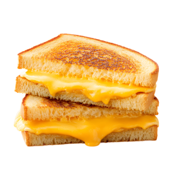

Introductie
Introductie
Eerst geef ik even een introductie over mezelf. Ik ben Mads, een leerling op het Veluws College Walterbosch. Ik hou erg van tosti's, dus ik dacht: "Waarom zou ik anderen niet leren hoe je nou een écht goede tosti moet maken?"
Wat is er zo fantastisch aan tosti?

Nou allereest de smaak. Fantastisch. Het balans dat te vinden is tussen kaas, ham, brood en de verfijnde boter... Fantastisch. Ook is het niet extreem moeilijk om te bereiden, maar toch is het echt een culinair hoogstandje in de sameleving.
De grote vraag: hoe maak je nou een écht lekkere tosti?
